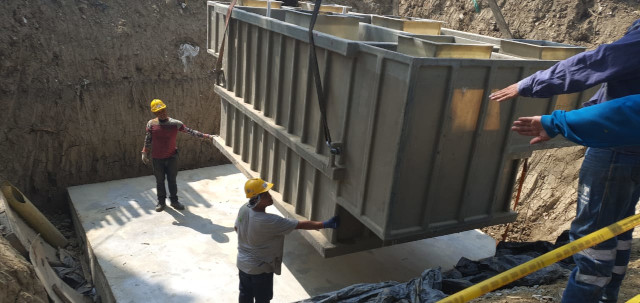

Construimos sistemas para hacer que el agua sucia se convierta en agua más limpia por medio de diferentes procesos quimicos y biológicos, de esta manera se elimina cualquier tipo de contaminantes.

Brindamos asesoría profesional para el análisis de las condiciones ambientales, que le permitirá tomar decisiones con criterio objetivo y especializado en la normatividad ambiental.

Se filtran los desechos provenientes de restaurantes o cualquier tipo de establecimiento; con el proposito de evitar molestias como malos olores, bloqueo de alcantarillas y restricción del flujo de aguas residuales.

Desarrollamos sistemas eléctronicos complementarios, para el autosostenimiento y anális de los procesos dentro de la planta de tratamiento.

Fabricamos sistemas de irrigación que transportan el agua a los lugares en dónde los necesitan

Realizamos la limpieza del agua usada y las aguas residuales para que pueda ser devuelto de forma segura a nuestro medio ambiente.
